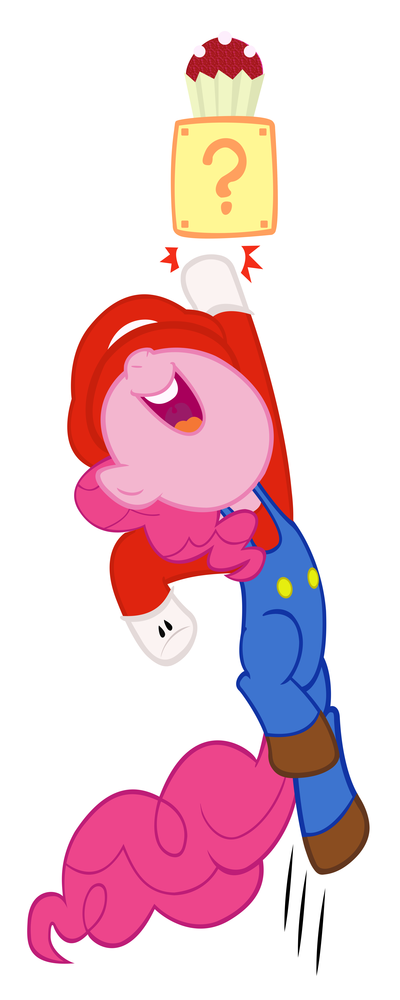

String pony = "Pinkie";Git clone
Kotlin workshop
Git clone
By JetBrains
IntelliJ
PyCHarm
GoLand
ReSharper
Kotlin requirements
Better than Java
Java Interoperability
Compilation speed
Easy to learn
Visibility
Here we go

Project structure
Gradle build with Kotlin DSL
Separated kotlin/java
Variables
.Variables
String pony = "Pinkie";varVariables
String pony = "Pinkie";var ponyVariables
String pony = "Pinkie";var pony: String = "Pinkie"Variables
String pony = "Pinkie";var pony = "Pinkie"Variables
final String pony = "Pinkie";val pony = "Pinkie"Values
final String pony = "Pinkie";val pony = "Pinkie"Everything is object
Int, Long, Double…
But not at runtime
Unit is the new Void
Unit is an object
Unit.toString()
Null
val nullable : String = nullNull safety
val nullable : String? = nullNull safety
nullable.toUpperCase() // KO...Null safety
if (null != nullable) nullable.toUpperCase()...Null safety
if (null != nullable) nullable.toUpperCase()nullable?.toUpperCase()..Null safety
if (null != nullable) nullable.toUpperCase()nullable?.toUpperCase()nullable?.toUpperCase() ?: "".Null safety
if (null != nullable) nullable.toUpperCase()nullable?.toUpperCase()nullable?.toUpperCase() ?: ""nullable!!.toUpperCase()Functions first-class citizen
stored in variables
stored in data structures
passed as arguments
returned from functions
don’t need classes
Top-level functions
fun {
}Top-level functions
fun main() {
}Top-level functions
fun main(): Unit {
}Top-level functions
fun main(): Unit {
println("hello world")
}Your turn
Open Helloworld.kt
code sayHelloUpper
Review
fun sayHelloUpper(who: String) : String {
val upper = who.toUpperCase()
return "Hello " + upper
}String template
fun sayHelloUpper(who: String) : String {
val upper = who.toUpperCase()
return "Hello $upper"
}String template
fun sayHelloUpper(who: String) : String {
return "Hello ${who.toUpperCase()}"
}Class
.
.Class
class Pony {
}Class
class Pony {
var name: String? = null
}Class
class Pony {
var name: String? = null
get() { return field }
set(value) { field = value }
}Constructor
class Pony {
val name: String
var friendsCount: Int
}Constructor
class Pony {
val name: String
var friendsCount: Int
constructor(name: String, friendsCount: Int = 0){
this.name = name
this.friendsCount = friendsCount
}
}Constructor
class Pony(name: String, friendsCount: Int = 0) {
val name: String = name
var friendsCount = friendsCount
}Constructor
class Pony(val name: String,
var friendsCount: Int = 0) {
}Calling constructor
val pony = Pony("Rainbow", 3)Properties access
val pony = Pony("Rainbow", 3)..Properties access
val pony = Pony("Rainbow", 3)val name = pony.name // GET.Properties access
val pony = Pony("Rainbow", 3)val name = pony.name // GETpony.friendCount = 5 // SETPOKO
class Pony(val name: String) {
override fun hashCode(): Int { ... }
override fun equals(other: Any?): Boolean { ... }
override fun toString(): String { ... }
}Data class
data class Pony(val name: String)Your turn
Remove or rename Workshop.java
Open Classes.kt and create Kotlin equivalent
Review
data class Workshop(val name: String,
var attendeesCount: Long)fun helloWorkshop(workshop: Workshop): String {
return "Hello to ${workshop.attendeesCount} attendees of ${workshop.name} workshop"
}Simplify With
with is a non-extension function that can access members of its argument concisely
.
.Simplify With
with is a non-extension function that can access members of its argument concisely
with(workshop) {
return "Hello to $attendeesCount attendees of $name workshop"
}Destructuring
Data class allow destructuring calls
.
.Destructuring
Data class allow destructuring calls
val (name, attendeesCount) = workshop
return "Hello to $attendeesCount attendees of $name workshop"Named parameters
data class Pony(
val id: String? = null,
val name: String,
val type: PonyType,
val createdAt: LocalDateTime? = null
)val mlp = Pony(null, "name", Pegasi, null)Named parameters
data class Pony(
val id: String? = null,
val name: String,
val type: PonyType,
val createdAt: LocalDateTime? = null
)val mlp = Pony(name="name", type = Pegasi)Copy Data class
fun copy(name: String = this.name,
type: PonyType = this.type) = Pony(name, type)Copy Data class
val newOne = oldOne.copy(name="Pinkie")List
...List
var empty = emptyList<String>() . .List
var empty = emptyList<String>()var twoVal = listOf("val1", "val2").List
var empty = emptyList<String>()var twoVal = listOf("val1", "val2")var mutable = mutableListOf("val1", "val2")Set
var empty = emptySet<String>()var twoVal = setOf("val1", "val2")var mutable = mutableSetOf("val1", "val2")Set
var empty = emptyMap<String, String>()var twoVal = mapOf("key" to "val")var mutable = mutableMapOf("key" to "val")Range
...Range
for (i in 1..4) print(i)..Range
for (i in 1..4) print(i)for (i in 4 downTo 1) print(i).Range
for (i in 1..4) print(i)for (i in 4 downTo 1) print(i)for (i in 1..8 step 2) print(i)Specialized
IntRange
IntArray
BooleanArray
….
Java way
val list = listOf("val1", "val2")
val first = list.get(0)
val second = list.get(1)Kotlin way
val list = listOf("val1", "val2")
val first = list[0]
val second = list[1]Destructuring way
val list = listOf("val1", "val2")
val (first, second) = listFunctional way
listOf("val1", "val2")
.map({ it -> it.toUpperCase() })Lambda
listOf("val1", "val2")
.map { it -> it.toUpperCase() }Lambda
listOf("val1", "val2")
.map { it.toUpperCase() }kotlin Stream ?
Stream.of("val1", "val2", "val3")
.peek(it -> System.out.println(it))
.filter(it -> "val2".equals(it))
.findFirst();Output :
val1
val2kotlin Stream ?
listOf("val1", "val2", "val3")
.onEach { println(it) }
.filter { "val2" == it }
.first()Output :
val1
val2
val3Stream ?
sequenceOf("val1", "val2", "val3")
.onEach { println(it) }
.filter { "val2" == it }
.first()listOf("val1", "val2", "val3").asSequence()
setOf("val1", "val2", "val3").asSequence()
arrayOf("val1", "val2", "val3").asSequence()Your turn
Open Collection.kt and implement methods
Review
fun sum(list: List<String>): Int {
return list.map { it.toInt() }
.toIntArray()
.sum()
}fun findFirst10(list: List<String>): Int {
return list.asSequence()
.map { it.toInt() }
.first{ it == 10 }
}Expression
fun sum(list: List<String>): Int {
return list.map { it.toInt() }
.toIntArray()
.sum()
}.
.Expression
fun sum(list: List<String>): Int {
return list.map { it.toInt() }
.toIntArray()
.sum()
}fun sum(list: List<String>): Int = list.map { it.toInt() }
.toIntArray()
.sum()Expression
fun sum(list: List<String>): Int {
return list.map { it.toInt() }
.toIntArray()
.sum()
}fun sum(list: List<String>) = list.map { it.toInt() }
.toIntArray()
.sum()Extension function
val mongoObject = ponyMapper.map(pony)Extension function
val mongoObject = pony.toNewPonyMongo()Extension function
fun Pony.toNewPonyMongo() = PonyMongo(this.id,...)Your turn
Open Extends.kt and create
UntouchablePony.toCustomString()
String.toPony()
Review
fun String.toPony(): UntouchablePony {
val (name, type) = this.split(" - ")
return UntouchablePony(name, type)
}fun UntouchablePony.toCustomString() = "$name - $type"Coroutines
Callback hell

Coroutines
fun doSomthing() {
val call1 = asyncCall1()
asyncCall2(call1)
}Coroutines
suspend fun doSomthing() {
val call1 = asyncCall1()
asyncCall2(call1)
}Start
suspend fun start() {
coroutineScope {
}
}Start
suspend fun start() {
coroutineScope {
launch {
}
}
}Start
suspend fun start() {
coroutineScope {
launch {
doSomthing()
}
}
}TL;DR
Pragmatic: take the best of others (Java, C#, Groovy…)
Null safety
Coroutines
~30% less line of code
Java Interoperability by design
[fragment]#
Not seen
Most of the langage
Kotlin native
Kotlin Multiplatform
Java to Kotlin IntelliJ
Not seen
Integration by :
Android
Gradle
SpringBoot
Junit
Kotlin universe
Ktor
mockk
assertk
Kodein (DI)
Questions
Thanks !